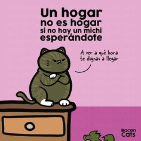

1. Dormir
Seguramente te habrás dado cuenta de que tu gatito se pasa gran parte del día durmiendo y es que es una de las actividades que más tiempo le ocupa. Los mininos suelen dormir unas 18 horas al día y por eso, lo ideal es dejarles tranquilos cuando lo hacen y disfrutar de ellos cuando estén despiertos.
2. Cazar
Los gatos tienen instinto cazador y es normal que cacen pájaros, lagartijas e incluso moscas. Además, su único objetivo es divertirse y no lo hacen por tener hambre. Sin embargo, asegúrate de que no se coma según qué animales porque podrían ser malos para ellos. Lo ideal es tener juguetes de los que puedas tirar para que los persiga y así sacie su instint
3. Arañar y rascar
Arañar objetos es uno de los mayores hobbies de los felinos y además, es totalmente instintivo y muy necesario para ellos, porque así es como afilan sus uñas. Te recomendamos que encuentres un buen rascador para evitar que tu gato te destroce los muebles o incluso las paredes.
4. Tomar el sol
A los gatos les encantan los sitios calentitos y cómodos y, siempre que puedan, buscarán una zona que les del sol y tumbarse allí. Si les colocas una camita cómoda, podrán realizar sus baños y relajarse en esa zona que tanto les gusta. Debes fomentar la comodidad del gato y proporcionárselo lo máximo que puedas.
5. Recibir mimos en el mentón o la columna
La gran mayoría de los dueños de mininos coinciden en que a sus gatos les encanta que se les rasque debajo del mentón o barbilla y en la columna, cerca de la cola. Si nunca lo has experimentado, pruébalo con tu amigo, verás como le gusta.
6. Observar lo que ocurre por la ventana
Les encanta mirar por la ventana y ser unas auténticas "viejas del visillo". Una ventana supone horas de distracción para ellos por la cantidad de estímulos que pasan por sus ojos, como los pájaros, las personas, el movimiento en las casas...
7. Las cajas de cartón
Son unos auténticos fanáticos de las cajas de cartón. Da igual, si tienen cientos de juguetes, si le das una de estas, se pasarán horas dentro de ella, mordiéndola y rascándola. Además, les sirve como escondite, ya que todo "depredador" que se acerque a ellos, estará en su campo de visión. Estas les ayuda a reducir el estrés y ofrecen una zona segura para ellos.
8. Estar en las alturas
Por precaución, muchos de los felinos, sobre todo los de gran tamaño, sienten el instinto de dormir en lugares altos para evitar que algún tipo de enemigo les sorprenda con la guardia baja. Este comportamiento heredado les proporciona el conocimiento de saber todo lo que está pasando, porque pueden observar desde un lugar en las alturas y sienten que dominan su alrededor. Te recomendamos que encuentres alguna torre o superficie alta en la que tus gatos puedan subirse para que se sientan más cómodos.
9. Comer hierba
A los gatitos les encanta comer hierba para purgarse y poder expulsar posibles parásitos intestinales al aumentar la actividad en su tracto digestivo. Hay algunas como el "Catnip" que puedes plantar en tu casa y dejar que tu minino la coma cuando quiera.
10. Frotarse
Este gesto tan característico de los gatos les sirve para comunicarse con nosotros. Lo hacen con el objetivo de impregnar su olor para delimitar e identificar aquello que entienden como suyo y así alejar, también, a cualquier otro felino.
Razones para adoptar un michi
Compañía cariñosa e independiente: Los gatos son expertos en brindar amor y compañía a la par que disfrutan de su independencia. A diferencia de los perros, no requieren tanta atención constante, lo que los convierte en una excelente opción para personas con un estilo de vida ocupado.

click en la imagen para ver un video
¡Gracias por leer mi pagina web!
Hecho por Axali Jerusalen Ontiveros Garcia